みどりまゆを一言で表現するなら、
「シルクの進化形」。
従来の白まゆが持つ美や健康に関わる成分に加え、
みどりまゆ特有のさまざまな機能が明らかになっています。
シルクという自然のいとなみに敬意を払いながら、
真摯に学び、誠実に形にしました。
限りない可能性と魅力を宿した特別なシルク。
それが絹生活研究所の「みどりまゆ」です。
自然豊かなシルクのまち、
新潟県十日町市で
みどりまゆを生産しています。
豊かな自然に恵まれ、全国有数の豪雪地としても知られる新潟県十日町市。雪が多く降り、湿度が高く保たれることから、この地域では古くから良質な絹織物が生産されてきました。みどりまゆは、そんな「シルクのまち」で研究・生産されています。
国内最大の
無菌工場
より純度の高い高品質のまゆに仕上げるため、
みどりまゆは専用の無菌工場で生産しています
。その衛生環境は、標準的な水道水に含まれる
菌の1/10以下（当社調べ）。世界初となるシル
クの無菌工場で、化粧品や医薬品、サプリメント
にも安心してお使いいただけます。
大学と連携・協力し
開発研究しています。
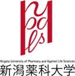
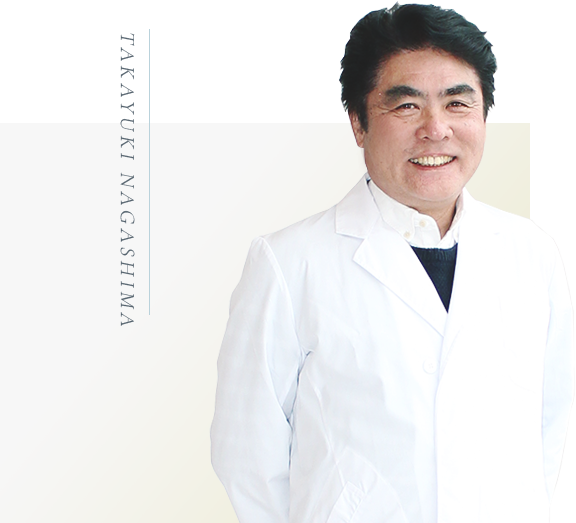
監修
東京農業大学教授
長島 孝行
農学博士。
東京農業大学農学部教授
ニューシルクロードプロジェクト代表。
日本野蚕学会副会長、日本マイクロナノバブル学会理事、富岡シ
ルクブランド協議会顧問、オーガニックコスメ協会理事他多数。シル
ク、農学、バイオテクノロジーに関する著書多数。
※複数の特許を取得 ・繊維系・・・繊維改質 ・化粧品関係、出願中
みどりまゆ
とは
今までのシルクの性質も、
今までにないシルクの可能性も備えた世界に一つのまゆ。
一般的にシルクといえば「白」ですが、実は品種によって黄色や緑色のまゆも存在します。ところが緑色のまゆは生育が難しく、しかも絹糸に向かないためほとんど生産されてきませんでした。
私たち絹生活研究所は、緑色のまゆに多く含まれる美容成分に着目。長年の研究・改良により、無菌状態での安定した生産を実現しました。
従来のシルクが持つさまざまな特性はすべて持ちながら、美や健康に寄与する成分がグレードアップした「みどりまゆ」。スキンケア用品やサプリメントへの活用に、大きな可能性を秘めています。
注目したのは「フラボノイド」。
みどりまゆで私たちが特に注目したのは、ポリフェノールの一種である「フラボノイド」が、従来のまゆとは比較にならないほど多く含まれていたことです。フラボノイドについて詳細な研究をすると、美や健康に深い関わりがあることが分かりました。くわしくは 「みどりまゆの効果」 で解説します。

改めて知っておきたい
シルクの魅力
01
美女たちが愛したシルク
絶世の美女といわれたクレオパトラ、中国の楊貴妃、フランス王妃マリー・アントワネットらも、シルクをこよなく愛したといわれています。
当時シルクは、衣服やドレスなどの高級繊維として活用されていました。
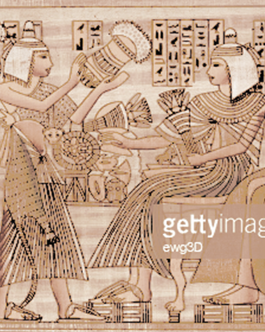
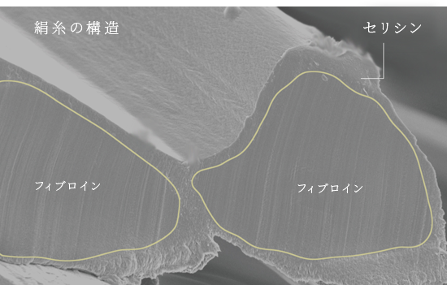
02
つくりが似ているから
肌にやさしい
製糸工場や絹織物工場で働く人の手は、水仕事をしているのにきれいといわれます。これはシルクに含まれるたんぱく質「セリシン」が、人の肌表面に存在するたんぱく質と構造がよく似ているためと考えられています。
03
医療用にも使われるほどの
安心素材
「セリシン」に包まれたもう一つのたんぱく質「フィブロイン」は、絹糸の主原料になります。
肌にやさしい天然繊維として、直接肌に触れる下着や、手術の縫合糸としても使用されています。
肌にやさしい天然繊維として、直接肌に触れる下着や、手術の縫合糸としても使用されています。
みどりまゆの
効果
Moist
保湿成分は
白まゆの1.6倍
白まゆの1.6倍
私たちの肌表面の角質に存在する
天然保湿因子（NMF）。その構造を
、みどりまゆに含まれる保湿成分・
セリシンと比べると、まさに瓜二つ
。さらに、みどりまゆは、白まゆの
1.6倍ものセリシンを有しています
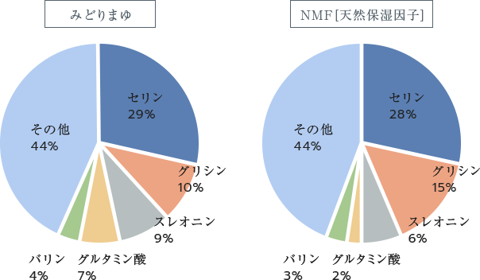
現代のストレス肌に届けたい
天然保湿成分
天然保湿成分
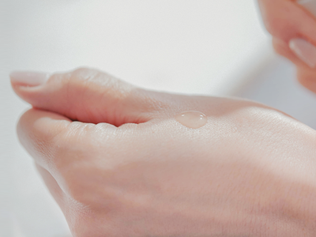
肌を健やかに保つ基本は、適度な保湿。
皮膚の乾燥は、小じわや肌荒れ、くすみなどさまざまな肌トラブルにつながります。保湿成分セリシンは
、ヒアルロン酸よりもすばやく肌を保湿し、キメを整えます。さらに保湿の持続力も高く、肌の水分量を長
時間にわたりキープできます。
セリシンは天然成分なので、肌が敏感な人や、敏感になりがちな季節にも安心。ストレスを抱えやすい現
代の素肌に、やさしく働きかけます。
Anti-
oxidant
oxidant
フラボノイドで
肌いきいき
肌いきいき
白まゆとみどりまゆの最大の違いは、フラボノイドの含有量です。みどりまゆは白まゆの○倍も含みます。
フラボノイドとはポリフェノールの一種で、酸化の原因となる活性酸素を抑制します。スキンケアにおいては、年齢とともに機能が低下しやすいターンオーバーを正常化。肌の新陳代謝を整えます。
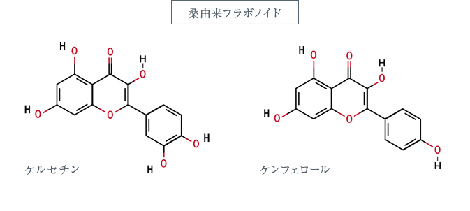
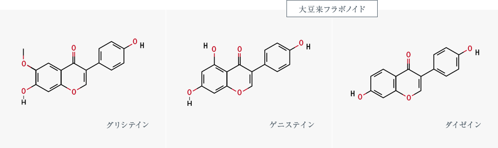
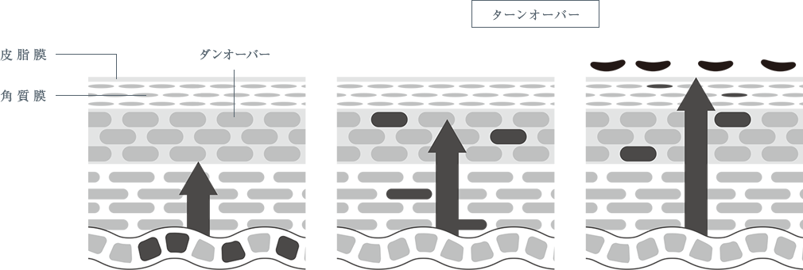
UV
Protection
紫外線を肌の深層までカット
紫外線には、肌の深層にまで届いてハリや弾力を失わせるA波と、肌表面にダメージを与えるB波があります。白まゆにもUVカット機能はありますが、防げるのはB波のみ。みどりまゆはA波とB波のどちらも防ぐことができます。これもフラボノイドによる効果です。
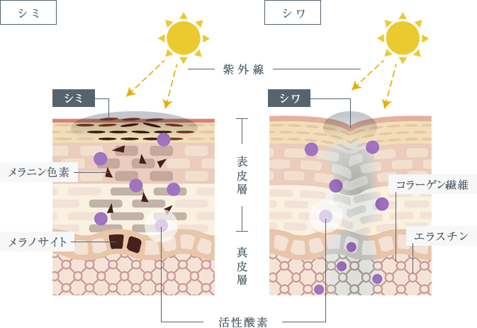
美白
腸内
環境
環境
免疫を
整える
整える
みどりまゆは
肌に負担の少ないエイジングケアを
可能にします。
肌に負担の少ないエイジングケアを
可能にします。
紫外線から肌を守ることでメラニンの生成を抑える美白効果、フラボノ
イドにより免疫や腸内環境を整える効果など、年齢とともに気になる素
肌や体のケアにも、みどりまゆは適しています
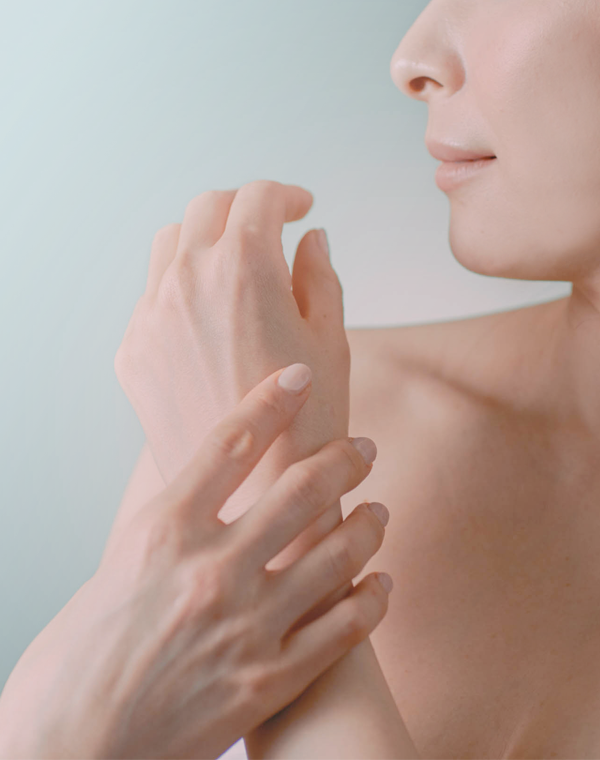
みどりまゆの素晴らしい
エイジングケア効果
エイジングケア効果
01
乾燥から守る
02
肌サイクルを守る
03
腸内環境を守る
04
体のサビを守る
05
しみ・紫外線から守る
06
髪を守る
07
生活習慣病守る
08
がんから守る
SILKING
SILKING
シルキング
みどりまゆには、幅広い分野での可能性が期待されています。
みどりまゆの可能性の文をここに、下のはダミーです。
ポリフェノールの一種で天然に存在する有機化合物群の植物色素の総称です。
植物の葉、茎、幹などに含まれており種類は4,000以上あります。
最近では人の体の特定の生理調節機能に働きかけるので、機能性成分として注
目されています。広義では化学構造で2つのベンゼン環が炭素3つで結合され
た基本構造をもつものをフラボノイド系といい。ここまではダミーです。
みどりまゆの
可能性
みどりまゆは、幅広い分野での活用が期待されています。
「きれいになりたい」
「健康的な素肌や体を手に入れたい」
「心地いい日々を送りたい」
「自然素材を暮らしに取り入れたい」
みどりまゆは、そんな思いに応える大きな可能性を秘めています。
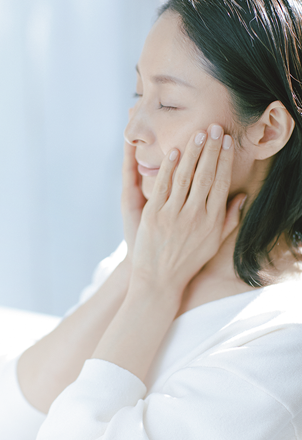
Skin Care
豊富な保湿成分により、ダメージに負けない健やか肌へ。敏感肌でも安心して使えるスキンケア用品に。
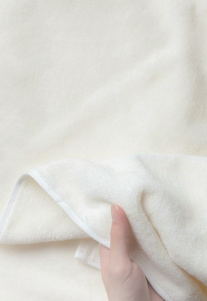
Fabric
敏感肌の人や赤ちゃんにもやさしいシルク。上質な繊維をファブリックに仕立て、暮らしをもっと心地よく。
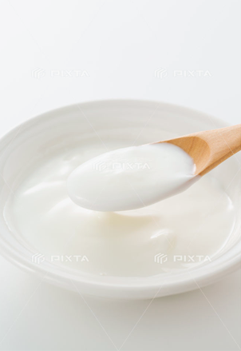
Foods
健康な体づくりにも役立つみどりまゆ。サプリメントや食品類への利用も期待されます。
絹生活研究所は、
みどりまゆの研究と製品開発を通して、
人々のライフスタイルに
きれい・健康・心地よさをお届けします
みどりまゆの研究と製品開発を通して、
人々のライフスタイルに
きれい・健康・心地よさをお届けします
足
を
お
運
び
く
だ
さ
い
ぜ
ひ
一
度
体
験
で
き
る
シ
ョ
ッ
プ
が
あ
り
ま
す
。
み
ど
り
ま
ゆ
の
心
地
よ
さ
を
絹生活研究所の
ショップ
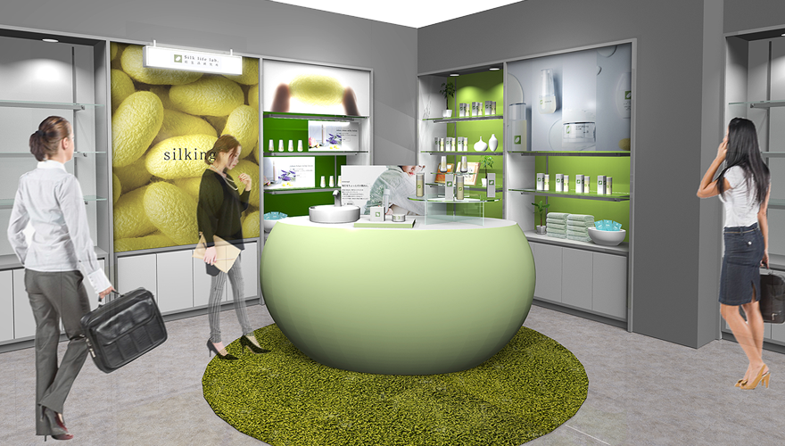
ストレスフルな現代人の肌を優しく包み込む、天然シルク由来の石けんを始めとした、スキンケア・ボディケア商品・ファブリックを取り扱うライフスタイルショップ。
店頭では、実際に石けんやボディケア商品をお試しできます。
絹生活研究所 上野マルイ店
住所： 〒110-8502 東京都台東区上野6-15-1 上野マルイB1F
TEL： 03-3833-01010
通常営業時間： 11:00〜20:00
アクセス： JR・東京メトロ「上野駅」広小路口 徒歩1分
株式会社絹生活研究所
〒948-0056 新潟県十日町市高田町6-597-1
0120-611-240 [月〜金/10:00～17:00]
https://silklifelab.com
〒948-0056 新潟県十日町市高田町6-597-1
0120-611-240 [月〜金/10:00～17:00]
https://silklifelab.com